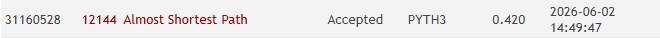

Almost Shortest Path
Quase Menor Caminho (UVa 12144)
Uma abordagem estruturada combinando buscas baseadas no algoritmo de Dijkstra com filtragem inteligente de arestas.
O Problema Proposto
Como conectar pontos sem utilizar arestas que compõem caminhos mínimos.
Definição do Quase Menor Caminho
Encontrar o menor caminho entre a origem S e o destino D no grafo, desconsiderando qualquer aresta pertencente a pelo menos um dos caminhos mais curtos.
Regras e Casos de Borda
Se nenhum caminho alternativo restar após a exclusão de caminhos ótimos, ou se não houver conexão inicial ligando S a D, a resposta impressa deve ser -1.
Pesos das arestas são positivos e o grafo é direcionado.
Caminho Ótimo vs Alternativo
O Desafio da Escala
Por que implementações ingênuas de fila de prioridade falham em Python.
Restrições Estritas (UVa Judge)
O Problema de Fila Não Otimizada
Dijkstra executado múltiplas vezes por caso de teste exige uma fila de prioridades extremamente veloz. Abordagens sem heaps geram sobrecarga temporal massiva:
- Busca linear na fila: O(V²) por Dijkstra, levando a Time Limit Exceeded (TLE).
- Cópia física de grafos: Consome CPU e RAM de maneira ineficiente.
Tempo de Execução Acumulado
A Estratégia de 3 Dijkstras
Como remover arestas pertencentes a caminhos ótimos sem recriar grafos.
Calcula as menores distâncias a partir de S no grafo original. Obtemos o vetor distS.
Calcula as menores distâncias até D usando o grafo transposto (invertido). Obtemos o vetor distD.
Arestas (u, v) de peso W que participam de caminhos mínimos satisfazem a condição de exclusão.
Roda o terceiro Dijkstra de S para D ignorando as arestas excluídas.
distS[u] + peso(u, v) + distD[v] == distS[destino]
Simulador Interativo
Veja o algoritmo em execução passo a passo no grafo de exemplo.
Console de Execução
Arquitetura Modular do Código
Como as responsabilidades foram separadas seguindo padrões elegantes.
Aresta Direcionada e Bag: Estruturas orientadas a objetos inspiradas no algs4 para modelar arestas com peso e listas de adjacência.
Grafo Direcionado: Representação por dígrafo ponderado e suporte ao método reverse() para transpor o grafo de maneira super eficiente.
Busca Dijkstra Otimizada: Algoritmo de busca desacoplado utilizando fila de prioridades acoplada ao heapq nativo do Python (execução O(E log V)).
Filtro e Execução: Lógica central de negócio executando os Dijkstras e filtrando as frentes ótimas, com main gerenciando I/O rápido.
Complexidade e Resultados
Análise de eficiência assintótica e validação no juiz online.
Análise Assintótica
- Complexidade de Tempo: Três Dijkstras independentes operando em O((V + E) log V) no pior caso.
- Complexidade de Espaço: Dígrafos original e reverso mapeados em memória, consumindo apenas O(V + E) (menos de 5MB de RAM).
- Uso do heapq nativo: Escrito em C puro no interpretador oficial CPython, eliminando qualquer overhead de objetos Python na fila.
Submissão Aceita!

Comprovante oficial de aceite (aceppted.png) disponível na pasta evidencias.